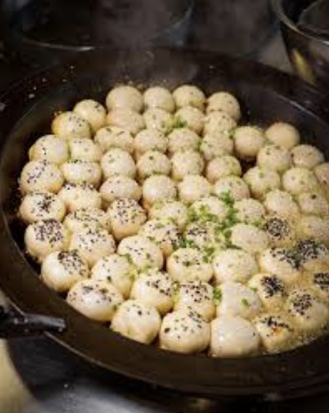

This morning I woke up bright and early, excited to try all the famous foods of Shanghai. I started my morning off at Yang’s Dumplings to try a plate of pan fried pork buns (生煎包, sheng jian bao). As soon as I walked in the restaurant, I saw so many different people of all ages enjoying their food. Because there were so many people, I knew this would be a sign of great food.
To the left of the restaurant you could see the kitchen. Behind a glass wall was a large pan, probably 10 feet in diameter full of golden pan fried buns. I sat down and ordered a plate for only 20 yuan (less than 3 USD, so super cheap!!). My food arrived quickly and I was very excited to start eating. I could smell the warm meaty filling and see the crisp layer of outside bread. As soon as I bit into the bun, warm soup oozed out and my mouth filled with an explosion of flavors. It was so fragrant and savory and the perfect way to start off my day.
The service was quick and the food was fresh and delicious. I highly recommend coming to this local chain to try a taste of an authentic causal Shanghai Meal. Yang’s Dumplings is definitely a stop you must add to your next trip to Shanghai.